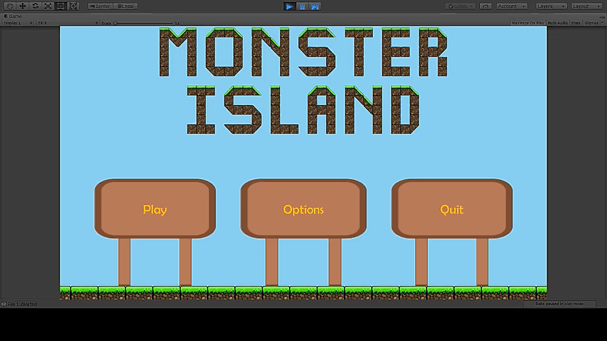
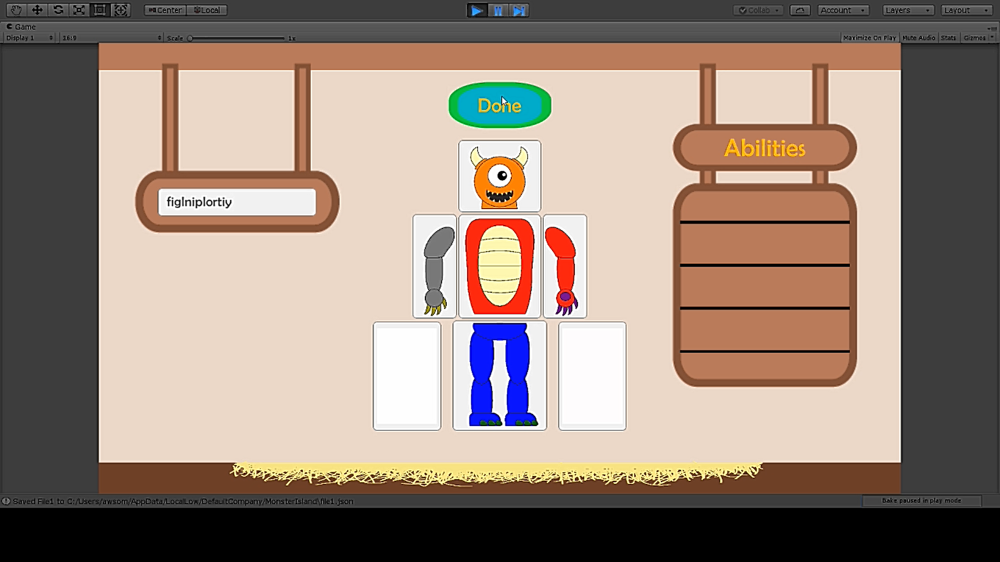
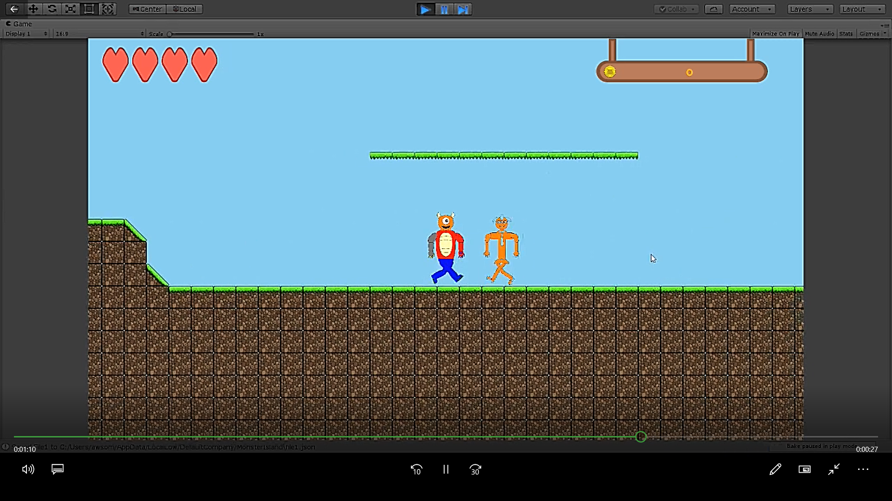

Monster Island is, to date, the largest project I have over worked on. Made with Unity alongside one other person in a combined effort of 665 hours, Monster Island is a children's platforming game with a focus on character creation and customization. The player is able to create a monster that they can play as by choosing from 100 different parts, ranging from arms, legs, torsos, and heads, which could be customized even further by changing their primary and secondary colors. The player is able to collect parts by defeating enemy monsters, each of which has it's own unique ability that is linked to a specific part, such as the head or arm. If the player is able to collect this specific part, they can use the enemy's ability as their own. I was in charge of creating the Monster Maker (the character creation screen), the enemy AI, all of the different monster abilities and weapons, animations, as well as all of the visual and musical assets, save for the tilesets that we used to create the level geometry. My partner was in charge of everything else, including (but certainly not restricted to) saving and loading the game, creating the various menus, level creation (we designed the levels together, but he is the one that actually made them), and all of the cutscenes. That split may seem like my partner was doing all the work, but keep in mind, we had 20 different monsters in total, which meant that I needed to create abilities, assets, and ai for each of them. So even though my partner technically had more tasks, we still did essentially the same amount of work, especially considering my part took about 60 more hours than his. The part that we are most proud of is how we were able to customize the monsters by using SVGs for their images. Since SVGs are basically just images represented by XML files, we were able to code the game to convert the SVGs to XML, locate which shapes needed to be recolored (which we did by giving them the ids PRIMARY and SECONDARY), apply the color change to their fill property, then convert the XML into a Sprite to be displayed in the game. This also allowed us to persistently save the player's monster by storing their images in JSON, since we could just convert the XMLs to strings.
  